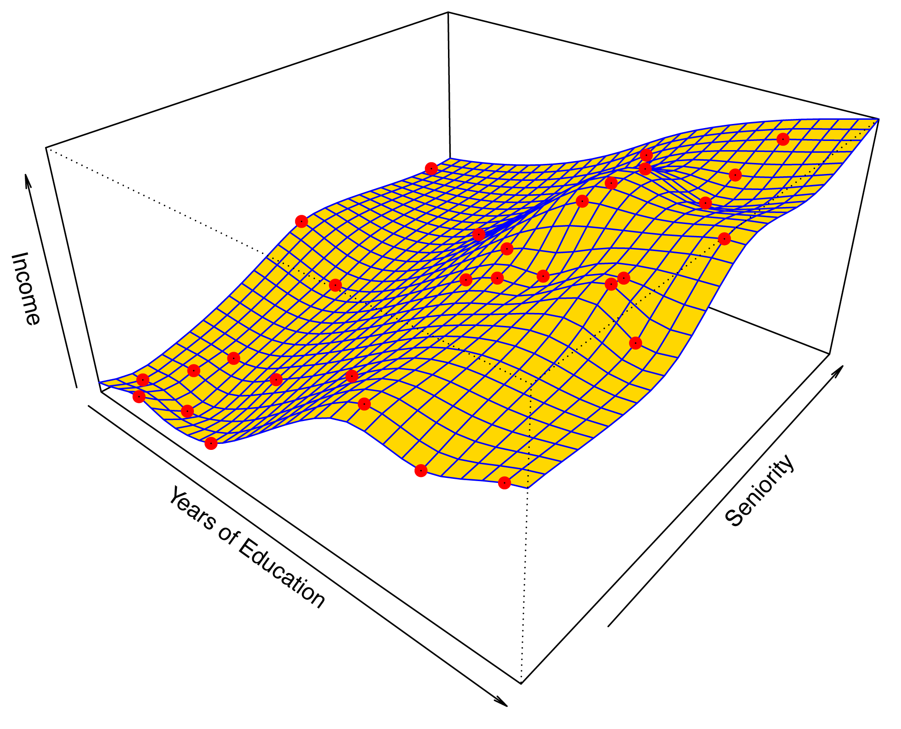
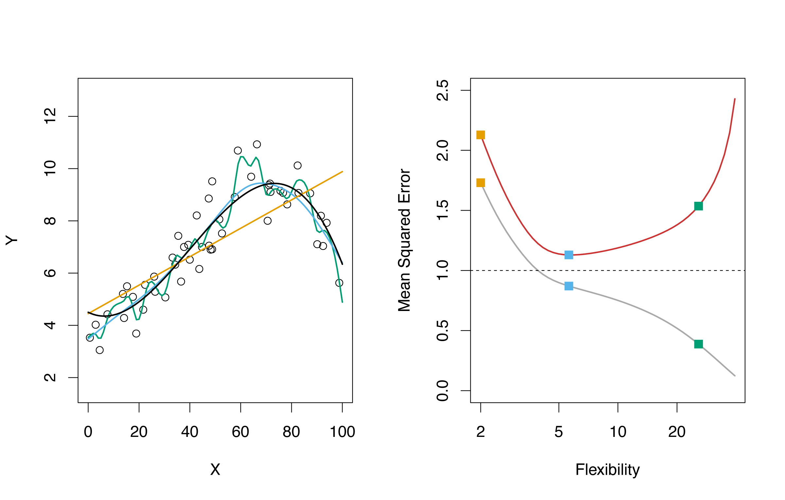
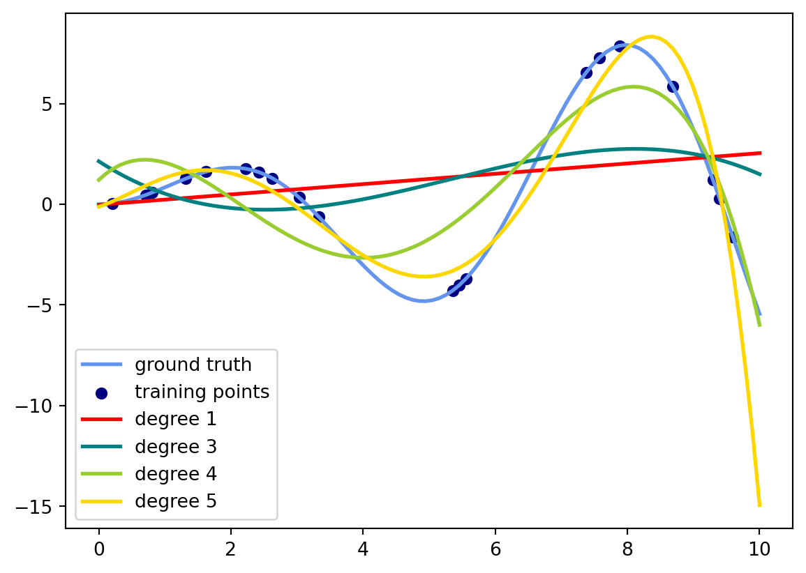
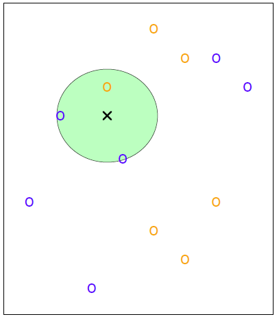
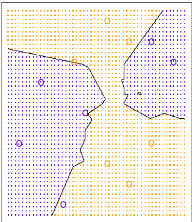
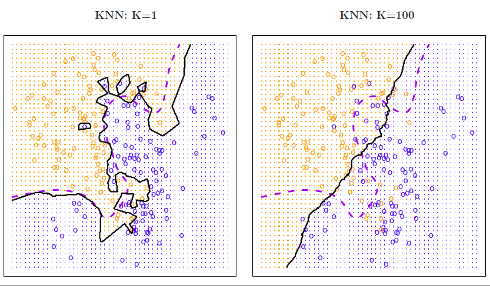
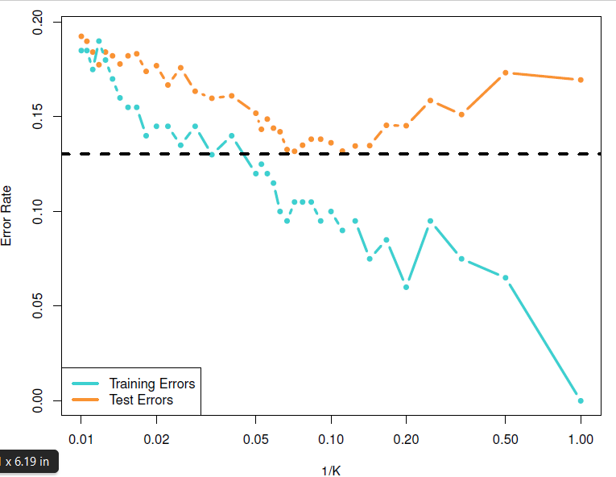
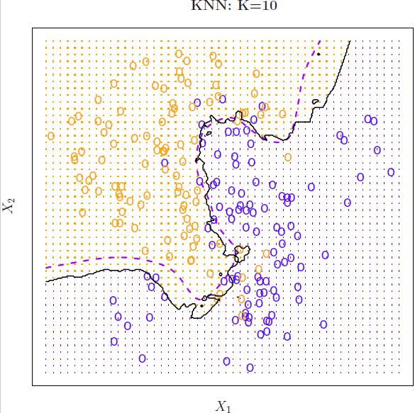

Some of the figures and material in this presentation are taken from (Gareth, James et al., 2015) with permission from the authors: G. James, D. Witten, T. Hastie and R. Tibshirani
Basic Setup
Let’s suppose we observe a quatitative response \(Y\) and \(p\) different predictors \(X_1,\ldots, X_p\), which can be written in the form \[
Y= f(X) + \varepsilon
\] We assume that the function \(f\) is fixed but unknown, and \(\varepsilon\) is a random error term, which is independent of \(X\) and has mean zero (i.e. its expected value \(E (\varepsilon) =0\)).
Statistical Learning refers to a set of approaches for estimating \(f\), for the purpose of either predict future responses or make inferences about inner relationships within the model predictors.
Prediction
Let’s suppose that a set of input (predictors) is readily available, but for some financial or practical constrains we cannot estimate the output \(Y\). We can predict \(Y\) using \[
\hat{Y} = \hat{f}(X),
\] where \(\hat{f}\) represents an estimate for \(f\) and \(\hat{Y}\) represent the resulting prediction for \(Y\).
Note that this is a very general setting, for instance in (multi)linear regression, we cannot make predictions outside certain regions.
How accurate is \(\hat{Y}\)?
The accuracy of \(\hat{Y}\) as a prediction for \(Y\) depends on two quantities + reducible error + irreducible error
The reducible error reflects the leverage that modeler has to pick a better statistical technique for estimation. Even in the case when we have a perfect estimate of \(f\) (i.e. \(\hat{Y}=f(X)\)), we will have \[
|\hat{Y}-Y| = \varepsilon
\] since \(\varepsilon\) does not depend on \(X\). Thus, we cannot reduce the error introduced by \(\varepsilon\) no matter how well our estimates are.
Recall that if you have a random variable \(Z\) (with \(E(|Z|)<\infty\) and \(\mathrm{Var}(Z)<\infty\)), the following relationships hold \[E(Z^2)= \mathrm{Var}(Z) + (E(Z))^2\] and \[\mathrm{Var}(aZ+b)= a^2\mathrm{Var}(Z)\]
Now if we consider for a moment that both \(\hat{f}\) and \(X\) are fixed (\(f\) was already fix but unknown), we have that the average (expected value) of the squared difference is
\[
\begin{align}
E(Y-\hat{Y})^2&= E(f(X)+ \varepsilon -\hat{f}(X))^2= \mathrm{Var}(f(X)-\hat{f}(X)+ \varepsilon ) + \left(E(f(X)-\hat{f}(X)+\varepsilon) \right)^2 \\
&= \mathrm{Var}(\varepsilon) + \mathrm{Var}(f(X)-\hat{f}(X))+ \left( E(f(X)-\hat{f}(X)) + E(\varepsilon) \right)^2\\
&= \color{red}{\mathrm{Var}(\varepsilon)}+\color{blue}{E\left( f(X)-\hat{f}(X)\right)^2}
\end{align}
\] The reducible error is colored in blue and the irreducible error is in red.
Thus, the accuracy will be (lower) bounded by \(\mathrm{Var}(\varepsilon)\), but this bound is almost never known in practice.
Inference
In this case we are mainly interested in determined the way that \(Y\) is affected by changing \(X_1,\ldots,X_p\). This means trying to understand the relationship between the output and the predictors. For instance we try to answer questions like
Which predictors are more important?
What relationship exist between the response and each of the predictors?
Is the relationship between \(Y\) and predictor \(X_i\) linear, or should it be nonlinear?
Estimation of \(f\)
The observations at hand are called training data, because we will use those observations to find an estimate \(\hat{f}\). Let \(x_{ij}\) represents the value of the predictor \(j\) for the \(i\)th observation (\(i\in \{1,\ldots,n\}, j\in \{1,\ldots,p\}\), and the response variable \(y_i\) for the \(i\)th observation. Our dataset looks something like this
We will consider the data set income2.csv that consists of \(n=30\) data points about seniority, income and level of education. We will apply a statistical learning method to find a function \(\hat{f}\) that approximates that approximates \(Y\) (i.e., \(Y \sim f(\hat{X})\) for any observation \((X,Y)\)).
Parametric Method
Parametric methods are those methods in which we need to find certain parameters for the estimation of \(f\).
We need to select the functional form of \(f\).
Traditionally, we apply the condition that \(f\) is linear
Note that \(\hat{f}\) does not match the unknown function \(f\), and we may think is other models that look more like\(f\) by adding certain complexity (e.g., adding quadratic terms). More complex models tend to overfit the data (i.e., they follow too close the errors and performed poorly when predicting unseen data).
Non-parametric methods
These methods do not make the assumption about the form of the function \(f\). Instead they look for an estimate of \(f\) that gets as close to the points as possible and looking at their distribution.
One of this methodologies for instance is the thin plate splines that tries to adjust a surface so that bending energy of the points is optimized.

One methodology that are worth mentioning for non-parametric test are
loess (local regression) where a parameter determines the size of the window in which the local regression will be applied.
Model interpretability or prediction accuracy
Whereas models with larger number of parameters tend to improve accuracy it comes at the expense of model interpretability.
Model Accuracy
First, there is not a single statistical method that can be accurate under all the circumstances.
One way to check accuracy is by measuring the quality of fit, which means to determine how well the predictions match the observed data.
In (multi)linear regression, one commonly-used measure is the MEAN SQUARED ERROR (MSE)
Also, in the case of the linear regression with one predictor variable \(Y=\beta_0+ \beta_1 X + \varepsilon\), where \(\mathrm{Var}(\varepsilon)=\sigma^2\), we have that \(\frac{1}{n-2} \sum_{i=1}^n e_i^2\) is an unbiassed estimator of \(\sigma^2\).
Training and test MSE
We will refer to the MSE obtained from the observations as the training MSE. Thus, if we have our training observations\(\{ (x_1,y_1),\ldots,(x_n,y_n) \}\), we obtain the estimate \(\hat{f}\) by using say multlinear regression. Then, the training MSE is suppose to be small for \(\hat{f}\), but can still use another more sophisticated model and get smaller MSE (say by restricted cubic splines).
However, if we would prefer to know how well the model perfoms for a set of previously unseen observations we need to quantify the test MSE. Let’s suppose that we have new observations \(\{ (\tilde{x_1},\tilde{y_1}),\ldots,(\tilde{x_m},\tilde{y_m})\}\), then we would like to select the method that minimizes equation \(\ref{eq:mse}\) when applied for our new set of observations.
If we consider a plot comparing the MSE with model flexibility (technically called degrees of freedom), we observe two fundamental properties
test MSE has a U-shape
training MSE is monotonically decreases as the model complexity increases.
The simulated data from \(f\) and three estimates are given (red linear regression and blue and green smoothing splines). The training MSE is shown in gray, and test MSE in red. The squares represent the values for each of those estimates.

In practice, an estimation of test MSE is much more difficult, but there are approaches that can be used to determine (namely, cross-validation).
Bias-Variance trade-off
Let’s suppose we have a given value \(x_0\), then the expected value of the test MSE can be decomposed into:
variance of \(\hat{f}(x_0)\),
squared bias of \(\hat{f}(x_0)\),
variance of the error terms \(\varepsilon\).
Recall that the bias of the estimator \(\hat{\Theta}\) of the random variable \(\Theta\) is defined as
The estimator \(\hat{\Theta}\) is called unbiassed when \(\mathrm{Bias}(\hat{\Theta})=0\).
In mathematical terms, test MSE is defined as an average (expected value) of square differences between the new values and their estimates, that is \(E[(y_0-\hat{f}(x_0))^2]\).
Note that \(f\) is fixed and theoretically known, so even when we have a new dataset \((x_0,y_0)\), their values are known without any error, thus \(E(f(x_0))=f(x_0)\) and \(\mathrm{Var}(f(x_0))=0\).
The variance refers to the amount by which \(\hat{f}\) would change if we estimated it using a different training set. Intuitively, if our model is simple (say linear regression) changing our training dataset won’t change the line that much, but if we have a model that follows closely the training set, replacing a point will increase the variance significantly.
On the other hand, bias refers to the error that is introduced by approximating a real-life problem (say highly non-linear) with a simpler model say a linear one.
print(__doc__)# Author: Mathieu Blondel# Jake Vanderplas# License: BSD 3 clauseimport numpy as npimport matplotlib.pyplot as pltfrom sklearn.linear_model import Ridgefrom sklearn.preprocessing import PolynomialFeaturesfrom sklearn.pipeline import make_pipelinedef f(x):""" function to approximate by polynomial interpolation"""return x * np.sin(x)# generate points used to plotx_plot = np.linspace(0, 10, 100)# generate points and keep a subset of themx = np.linspace(0, 10, 100)rng = np.random.RandomState(0)rng.shuffle(x)x = np.sort(x[:20])y = f(x)# create matrix versions of these arraysX = x[:, np.newaxis]X_plot = x_plot[:, np.newaxis]colors = ['red','teal', 'yellowgreen', 'gold']lw =2plt.plot(x_plot, f(x_plot), color='cornflowerblue', linewidth=lw, label="ground truth")plt.scatter(x, y, color='navy', s=30, marker='o', label="training points")for count, degree inenumerate([1,3, 4, 5]): model = make_pipeline(PolynomialFeatures(degree), Ridge()) model.fit(X, y) y_plot = model.predict(X_plot) plt.plot(x_plot, y_plot, color=colors[count], linewidth=lw, label="degree %d"% degree)plt.legend(loc='lower left')plt.show()
Built-in functions, types, exceptions, and other objects.
This module provides direct access to all 'built-in'
identifiers of Python; for example, builtins.len is
the full name for the built-in function len().
This module is not normally accessed explicitly by most
applications, but can be useful in modules that provide
objects with the same name as a built-in value, but in
which the built-in of that name is also needed.

Note that the number of parameters to be estimated increases + For degree 1, \(f(x)=a_1x+a_0\) + For degree 2, \(f(x)= a_2x^2+a_1x+a_0\), etc.
Classification
When we have categorical responses (e.g., “high”, “low”,“medium”) the our prediction problem become a classification problem. Let’s suppose that we are looking for a estimate \(f\) basis of the training observations \(\{ (x_1,y_1), \ldots, (x_n,y_n)\}\) where \(y_i\) is a member of one given class \(C_k\) (\(k\in \{1,\ldots,r\}\).
One common approach to quantify the quality of the estimate \(\hat{f}\) is the training error rate, that is the proportion of classification errors that we incurred during if we apply our estimate \(\hat{f}\).
where \(\hat{y}_i\) is our prediction for the observation \(i\) by the estimate \(\hat{f}\), and \(I_{y_i \ne \hat{y}_i}\) is the indicator function which is equal to 1 if the condition is true (i.e. \(y_i \ne \hat{y}_i\)) and zero elsewhere. Thus the expression on the right is measuring the fraction of incorrect classifications.
As we did before, we can define the test error rate associated with a set of previously unseen observations \((x_0,y_0)\) as
\[
\mathrm{Average}(I_{y_0 \ne \hat{y}_0})
\]
Bayes classifier
The test error rate given in (\(\ref{eq:classtesterror}\)) can be minimized (on average) by a simple classifier that assigns each observation the most likely class, given its predictor values). So, for the test observation with predictor vector \(x_0\) will belong to the class \(j\) for which
\[
\mathrm{Pr}(Y=j | X=x_0)
\]
is largest. This classifier is referred to as Bayes classifier.
The Bayes classifier produces the lowest possible test error rate, called the Bayes error rate. In general the overall Bayes error rate is given by
\[
1 - E \left( \max_{j} \mathrm{Pr}(Y=j|X) \right)
\]
K-Nearest Neighbors
One of the problems with the Bayes classifier is that we normally don’t know the conditional distribution \(Y\) given \(X\). Thus, it becomes a theoretical gold standard which is unattainable.
\(K\)-nearest neighbors (KNN) in which given a positive integer \(K\) and a test observation \(x_0\), the KNN classifier first identifies the \(K\) points in the training data that are the closest to \(x_0\), represented by \(\cal{N}_0\). It then estimates the conditional probability for class \(j\) as the fraction of points in \(\cal{N}_0\) whose response values equal \(j\):
Finally, KNN applies Bayes rule and classifies the test observation to \(x_0\) to the class with the largest probability.
Example
Let’s suppose we have two classes \(\circ\) of two colors and \(\times\) represents the center of an unseen new point \(x_0\). And let’s pick \(K=3\). So the closest three points are inside or in the boundary of the green circle. This circle has 2 blue and 1 orange point. Thus, resulting in estimated probabilities of \(2/3\) for the blue and \(1/3\) for the orange class.

Then, the \(\times\) point belongs to the blue class. When the same procedure is applied to a sufficient number of points in the plane, we get something like this

Effect of \(K\)
The choice of \(K\) has a significant impact on the KNN classifier.

From this picture, we can see that when \(K=1\), the decision boundary is overly flexible (i.e. almost classifies the dataset “perfectly”). This case we expect that the classifier has low bias but very high variance. On the other hand, when we have a high \(K\) (in the picture \(K=100\)) we get almost linear classification, where low variance and high bias is expected.
Just as we did with the other classifiers, we consider the variable \(1/K\) as flexibility

Thus, we observe the same \(U\) shape for the test error rate and decreasing training error rate as the model tends to overfit data. The dotted line represents the Bayes error rate.
For the case of \(K=10\) we have

import numpy as npimport matplotlib.pyplot as pltfrom matplotlib.colors import ListedColormapfrom sklearn import neighbors, datasetsn_neighbors =15# import some data to play withiris = datasets.load_iris()# we only take the first two features. We could avoid this ugly# slicing by using a two-dim datasetX = iris.data[:, :2]y = iris.targeth =.02# step size in the mesh# Create color mapscmap_light = ListedColormap(['orange', 'cyan', 'cornflowerblue'])cmap_bold = ListedColormap(['darkorange', 'c', 'darkblue'])for weights in ['uniform', 'distance']:# we create an instance of Neighbours Classifier and fit the data. clf = neighbors.KNeighborsClassifier(n_neighbors, weights=weights) clf.fit(X, y)# Plot the decision boundary. For that, we will assign a color to each# point in the mesh [x_min, x_max]x[y_min, y_max]. x_min, x_max = X[:, 0].min() -1, X[:, 0].max() +1 y_min, y_max = X[:, 1].min() -1, X[:, 1].max() +1 xx, yy = np.meshgrid(np.arange(x_min, x_max, h), np.arange(y_min, y_max, h)) Z = clf.predict(np.c_[xx.ravel(), yy.ravel()])# Put the result into a color plot Z = Z.reshape(xx.shape) plt.figure() plt.pcolormesh(xx, yy, Z, cmap=cmap_light)# Plot also the training points plt.scatter(X[:, 0], X[:, 1], c=y, cmap=cmap_bold, edgecolor='k', s=20) plt.xlim(xx.min(), xx.max()) plt.ylim(yy.min(), yy.max()) plt.title("3-Class classification (k = %i, weights = '%s')"% (n_neighbors, weights))plt.show()